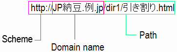

A Web address is used to point to a resource on the Web such as a Web page. Recent developments enable you to add non-ASCII characters to Web addresses. This article provides a high level introduction to how this works. It is aimed at content authors and general users who want to understand the basics without too many gory technical details. For simplicity, we will use examples based on HTML and HTTP. We will also address how this works for both the domain name and the remaining path information in a web.
Web addresses are typically expressed using Uniform Resource Identifiers or URIs. The URI syntax defined in RFC 3986 STD 66 (Uniform Resource Identifier (URI): Generic Syntax) essentially restricts Web addresses to a small number of characters: basically, just upper and lower case letters of the English alphabet, European numerals and a small number of symbols.
The original reason for this was to aid in transcription and usability, both in computer systems and in non-computer communications, to avoid clashes with characters used conventionally as delimiters around URIs, and to facilitate entry using those input facilities available to most Internet users.
User's expectations and use of the Internet have moved on since then, and there is now a growing need to enable use of characters from any language in Web addresses. A Web address in your own language and alphabet is easier to create, memorize, transcribe, interpret, guess, and relate to. It is also important for brand recognition. This, in turn, is better for business, better for finding things, and better for communicating. In short, better for the Web.
Imagine, for example, that all web addresses had to be written in Japanese katakana, as shown in the example below. How easy would it be for you, if you weren't Japanese, to recognize the content or owner of the site, or type the address in your browser, or write the URI down on notepaper, etc.?
There have been several developments recently that begin to make this possible.
We will refer to Web addresses that allow the use of characters from a wide range of scripts as Internationalized Resource Identifiers or IRIs. For IRIs to work, there are four main requirements:
Various document formats and specifications already support IRIs. Examples include HTML 4.0, XML 1.0 system identifiers, the XLink href attribute, XMLSchema's anyURI datatype, etc. We will also see later that major browsers support
the use of IRIs already.
Unfortunately, not so many protocols allow IRIs to pass through unchanged. Typically they require that the address be specified using the ASCII characters defined for URIs. There are, however, well specified ways around this, and we will describe them briefly in this article.
The fourth requirement demands that a string of characters be matched against a target whether or not those characters are represented by the same encoding, ie. bytes. This is dealt with by using UTF-8 as a broker.
We will use the following fictitious Web address in most of the examples on this page:

This is a simple IRI that is composed of three parts.
http:// contains information about the scheme to be used. Note that non-ASCII
characters are not currently used here.JP納豆.例.jp, is the domain name.What it all means. The domain name (JP納豆.例.jp) starts with 'JP' so that in the worked examples we can show what happens to ASCII text within a domain name. The rest of the domain name is read 'natto (a Japanese delicacy made from fermented soya beans) dot rei (meaning example) dot jp (Japanese country code)'. The path reads 'dir1 slash hikiwari (a type of natto) dot html'.
When it comes to dealing with requirements two to four above, there is one solution for the domain name and a different solution for the path. We will explore each of these in turn.
Domain names are allocated and managed by domain name registration organizations spread around the world.
A standard approach to dealing with multilingual domain names was agreed by the IETF in March 2003. It is defined in RFCs 3490, 3491, 3492 and 3454, and is based on Unicode 3.2. One refers to this using the term Internationalized Domain Name or IDN.
We give a slightly more detailed worked example in the next section but, in summary, the desired Web address is stored in a document link or typed into the client's address bar using the relevant native characters, but when a user clicks on the link or otherwise initiates a request, the user agent (ie. the browser or other client requesting the resource) needs to convert any native script characters in the Web address to punycode representations.
(Of course, if the user agent is unable to do this, it is always possible to express the location in the punycode directly, although it is not very user friendly.)
Let's examine the steps in resolving an International Domain Name from the user to the identification of the resource. (Remember that this looks only at how the domain name is handled. The path information is treated differently and will be described later.)
The user clicks on a hyperlink or enters the IRI in the address bar of a user agent. At this point the IRI contains non-ASCII characters that could be in any character encoding. Here is the domain name that appears in the example above.
JP納豆.例.jp
If the string that represents the domain name is not in Unicode, the user agent converts the string to Unicode. It then performs some normalization functions on the string to eliminate ambiguities that may exist in Unicode encoded text.
Normalization involves such things as converting uppercase characters to lowercase, reducing alternative representations (eg. converting half-width kana to full), eliminating prohibited characters (eg. spaces), etc.
Next, the user agent converts each of the labels (ie. pieces of text between dots) in the Unicode string to a punycode representation.
A special marker ('xn--') is added to the beginning of each label containing non-ASCII characters to show that the label was not
originally ASCII. The end result is not very user friendly, but accurately represents the original string of characters while using only the
characters that were previously allowed for domain names. Our example now looks like this:
xn--jp-cd2fp15c.xn--fsq.jp
Note how the uppercase ASCII characters JP at the beginning of the domain name are lowercased, but still recognizable. Any existing
ASCII characters in a label appear first, followed by a single hyphen and then an ASCII-based representation of any non-ASCII characters.
Next, the punycode is resolved by the domain name server into a numeric IP address (just like any other domain name is resolved).
Finally the user agent sends the request for the page. Since punycode contains no characters outside those normally allowed for protocols such as HTTP, there is no issue with the transmission of the address. This should simply match against a registered domain name.
Note that most top-level country codes, for example, the .jp at the end of JP納豆.例.jp, still has to be in Latin characters at the moment. Since 2010, however, IANA has been progressively introducing internationalized country code top level domains, such as مصر. for Egypt, and .рф for Russia.
In practice, it makes sense to register two names for your domain. One in your native script, and one using just regular ASCII characters. The latter will be more memorable and easier to type for people who do not read and write your language. For example, you could additionally register a transcription of the Japanese in Latin script, such as the following:
http://JPnatto.rei.jp/Whereas the domain registration authorities can all agree to accept domain names in a particular form and encoding (ASCII-based punycode), multi-script path names identify resources located on many kinds of platforms, whose file systems do and will continue to use many different encodings. This makes the path much more difficult to handle than the domain name.
Having dealt with the domain name using punycode, we now need to deal with the path part of an IRI. The IETF Proposed Standard RFC 3987 (Internationalized Resource Identifiers (IRIs)) defines how to deal with this.
There is already a mechanism in the URI specification for representing non-ASCII characters in URIs. What you do is represent the underlying bytes using what is referred to as percent-escaping (in the specification, the less common term percent-encoding is used). Thus, in the page you are currently reading, which is encoded in UTF-8, we could represent the filename 引き割り.html from our previous example as shown just after this paragraph. What you are seeing are two-digit hexadecimal numbers, preceded by %. These represent the bytes used to encode in UTF-8 the Japanese characters in the string. Each Japanese character is represented by 3 bytes, which are transformed into three percent-escapes.
%E5%BC%95%E3%81%8D%E5%89%B2%E3%82%8A.html
Apart from the fact that this is not terribly user friendly, there is a bigger issue here. Another person may want to follow the same link from a page that uses a Shift-JIS character encoding, rather than UTF-8. In this case, if we were to use percent-escaping to transform the (same) characters in the address so that they to conform to the URI requirements, we would base the escapes on the bytes that represent 引き割り.html in Shift-JIS. There are only two bytes per Japanese character in Shift-JIS, and they are different bytes from those used in UTF-8. So this would yield the totally different sequence of byte escapes shown below.
%88%F8%82%AB%8A%84%82%E8.html
So here we see that, although the URI escape mechanism allows the Japanese address to be specified, the actual result will vary according to the page of origin. How then is it possible to know how to map that onto a sequence of characters that will match the name of the resource as exposed by the system where it resides?
The chief difficulty here is that there is no encoding-related meta-data associated with the URI strings to indicate what characters they represent. Even if that information were available, the total number of mappings that a server would need to support to convert any incoming string to the appropriate encoding would be extremely high.
Not only that, but the file system on which the resource itself actually resides may expose the file name using a totally different encoding, such as EUC-JP. If so, the underlying byte sequence that represents the file name as the system knows it would be different again. So how are we going to know that these byte sequences all refer to the same resource?
Note that the filename may be stored and exposed in different encodings. Under Windows NT or Windows XP the IIS or Apache 2 server exposes the file name as UTF-8, even though the operating system stores it as UTF-16.
The IRI specification uses Unicode as a broker. It specifies that, before conversion to escapes, the IRI should be converted to UTF-8. As for IDNs, if a conversion is required by the protocol, it is the user agent that is responsible for performing that change when a request is made for a resource.
The server must also then recognize the Unicode characters in the incoming web address and map them to the encoding used for the actual resources.
(Remember that we have already dealt with the domain name part of the IRI using IDN. The rules in the IRI specification are typically only applied to the path part of the multilingual Web address.)
It is also possible to apply percent-escaping to the domain name before conversion, but clients often simply convert directly to punycode.
Let us look at what the client does to send the path part of a web address to an HTTP server. Here is the path part of the earlier example Web address:
/dir1/引き割り.htmlWhen the user clicks on a hyperlink or enters the IRI in the address bar of a user agent, the address may be in any character encoding, but that encoding is usually known.
If the string is input by the user or stored in a non-Unicode encoding, it is converted to Unicode, normalized using Unicode Normalization Form C, and encoded using the UTF-8 encoding.
The user agent then converts the non-ASCII bytes to percent-escapes. Our example now looks like this:
/dir1/%E5%BC%95%E3%81%8D%E5%89%B2%E3%82%8A.htmlThe string is now in URI form, and will be acceptable to protocols such as HTTP. Note how the ASCII characters 'dir1' and '.html' are just passed through without change, since these characters are encoded in the same way in both ASCII and UTF-8.
The user agent sends the request for the page.
When this request hits the server, one of two things need to happen:
Martin Dürst has written an Apache module called mod_fileiri to convert requests from UTF-8 to the encoding of the server.
This covers the basics. There are some additional parts of the specification that deal with finer points, such as how to handle bidirectional text in IRIs, and so on.
Here is the first part of the HTTP header for the page request generated by our example. It shows the host name as an IDN, and the path using percent-escaping where appropriate:
GET /dir1/%E5%BC%95%E3%81%8D%E5%89%B2%E3%82%8A.html HTTP/1.1 Host: xn--jp-cd2fp15c.xn--fsq.jp User-Agent: Mozilla/5.0 (Windows; U; Windows NT 5.1; en-US; rv:1.5a) Gecko/20030728 Mozilla Firebird/0.6.1 …
Numerous domain name authorities already offer registration of internationalized domain names. These include providers for top level country domains as .cn, .jp, .kr, etc., and global top level domains such as .info, .org and .museum.
Client-side support for IDN is appears in the recent versions of major browsers, including Internet Explorer 7, Firefox, Mozilla, Netscape, Opera, and Safari. It only works in Internet Explorer 6 if you download a plug-in (Microsoft support pages provide some suggestions). This means that you can use IDNs in href values or the address bar, and the browser will convert the IDN to punycode and look up the host.
You can run a basic check to see whether IDNs work on your system using this simple test.
It has been an issue, until now, that IDN is not natively supported by Internet Explorer, with its huge market share. Although plug-ins are available, not all people will know how to, will want to, or will be able to install them. However, IE7 or its successors, which do support IDN, will, over time, replace most IE6 installs.
Note that, as a simple fallback solution until IDN is widely supported, content authors who want to point to a resource using an IDN could write the link text in native characters, and put a punycode representation in the href attribute. This guarantees that the user would be able to link to the resource, whatever platform they used.
If, for some reason, you wanted to, it is possible to turn off IDN support in IE7, Firefox and Mozilla.
One of the problems associated with IDN support in browsers is that it can facilitate phishing through what are called 'homograph attacks'. Consequently, most browsers that support IDN also put in place some safeguards to protect users from such fraud.
Special thanks to Michael Monaghan and Greg Aaron for their contributions to this section.
The way browsers typically alert the user to a possible homograph attack is to display the URI in the address bar and the status bar using punycode, rather than in the original Unicode characters. Users should therefore always check the address bar after the page has loaded, or the status bar before clicking on a link. However, note that:
'Homograph attack' refers to mixing characters that look alike visually in a URI in order to deceive someone about which site they are linking to. For example, in some fonts the capital 'I' looks sufficiently like an 'l' that the URI 'www.paypaI.com' seems to be taking you to a Paypal site, whereas it is most probably routing you to a place where someone will try to harvest your personal information.
Different browsers use different strategies to determine whether the URI should be shown in Unicode or punycode.
If an address appears as punycode, it doesn't necessarily mean that this is a bogus site – simply 'user beware'. It's up to the user to try and figure out whether the site should be avoided or not.
Detecting potential homograph attacks is usually only one part of the overall mechanism a browser uses to detect whether a site is phishing or not.
Internet Explorer 7 shows the address as punycode if one of the following conditions is true:
The domain name contains a character from a script that is not used for the languages included in the user's language preferences. Languages that use the Latin script are split into English (ASCII only) and others (for which any non-ASCII Latin character is valid). For example, bäcker.com will not work if your language preferences include only English, but will work if you have German in your preferences (or even, say, French, since the accented characters are not language-specific).
Any labels in the domain name (ie. a run of characters between dots) contains characters from a mix of scripts that do not appear together within a single language. For instance, the domain name ελληνικάрyccĸий.org will be displayed as punycode, because Greek characters cannot mix with Cyrillic within a single label. On the other hand, ελληνικά.рyccĸий.org would be fine. Note also that a combination of Japanese kanji and kana is also acceptable, eg. 全国温泉ガイド.jp.
IE7 allows an IDN to be displayed as Unicode if it mixes ASCII characters with a single other script from a given list. Note that cyrillic is not one of those scripts, so pаypаl.com (where the 'a' characters are from the Cyrillic block rather than Latin) would be displayed as punycode.
Binding the behavior to the list of languages in the browser preferences also means that a language that is not in the standard list supplied by IE will always produce punycode. For example, Amharic in Ethiopic text will be displayed as punycode even if you add am to the browser preferences. (Fortunately, there don't seem to be any registries providing Amharic IDNs at the moment.)
Some fraudulent domain names may still slip through this net. In this case, IE7's normal phishing protection would step in to compare the domain with reported sites. IE7 can also, however, 'apply additional heuristics to determine if the domain name is visually ambiguous'. This is helpful when letters within the same script are visually similar.
In addition to displaying suspect IDNs in the address bar in punycode, IE7 also uses its Information Bar to signal possible danger to the user. It also uses a clickable icon at the end of the address bar to notify you when an URL contains a non-ASCII character. It also displays the address bar in all windows.
Firefox 2.x uses a different approach. It only displays domain names in Unicode for certain whitelisted top level domains. Firefox selects Top Level Domains (TLDs) that have established policies on the domain names they allow to be registered and then relies on the registration process to create safe IDNs. You can find a list of supported TLDs on the Mozilla site. If an IDN is from a TLD that is not on the list, the web address will appear in punycode form in the status and address bars. In some cases the TLD policy statements should include rules about managing visually similar characters within the set of characters allowed.
In addition, IDNs that contain particular characters (e.g. fraction-slash), even within trusted TLDs, are treated suspiciously, and cause the label to be displayed as punycode.
Opera 9.x uses a similar approach to Firefox, though it differs slightly in implementation. Officially, it only displays domain names in Unicode for whitelisted TLDs listed in opera6.ini, which is updated automatically.
For TLDs that are not on the list, Opera says that it allows domain names to use Latin 1 characters, ie. Latin characters with accents that support Western European languages. All other domain names are displayed as punycode.
In reality, tests show that Opera currently displays many characters as Unicode, regardless of whether a TLD is on the whitelist or not. One exception we found is Devanagari script, which is displayed as punycode if the TLD is not on the list.
Opera does, however, also display certain mixtures of scripts as punycode. The testing revealed this is true for combinations of Greek or Cyrillic characters with Latin characters.
Also, Opera's list of illegal characters is slightly longer than the official IDNA list. Some IDNs, while displayed as punycode in other browsers, are entirely illegal in Opera.
Safari 9.x provides a user-editable list of scripts that are allowed to be displayed natively in domain names. If a character appears in a domain name and does not belong to a script in this list, the URI is displayed as punycode.
At the time of writing, the initial whitelist contains Arabic, Armenian, Bopomofo, Canadian_Aboriginal, Devanagari, Deseret, Gujarati, Gurmukhi, Hangul, Han, Hebrew, Hiragana, Katakana_Or_Hiragana, Katakana, Latin, Tamil, Thai, and Yi. Scripts like Cyrillic, Cherokee and Greek are specifically excluded because they contain characters that are easily confused with Latin characters.
If the whitelist is emptied, any non-ASCII character causes the address to be displayed as punycode.
Mozilla 1.7x displays all IDNs as punycode.
Examples. There is a test page you can use to see how your browser displays IDNs in the status bar. See also the page that gathers results for a number of browsers.
Other phishing concerns and registry-level solutions. Some potential aspects of phishing control need to be addressed by the registration authorities, and built into their policies for IDN registration.
Some registration authorities have to carefully consider how to manage equivalent ways of writing the same word. For example, the word 'hindi' can be written in Devanagari as either हिंदी (using an anusvara) or हिन्दी (using a special glyph for NA).
There is a similar issue with the use of simplified vs. traditional characters in the Chinese Han script.
Another issue arises where two characters or combinations of characters within a single script look very similar, for instance the Tamil letter KA க and the Tamil digit one ௧ are indistinguishable. In other cases, diacritic marks attached to characters may be difficult to distinguish in small font sizes.
As mentioned earlier, these issues exist even in the Latin (ASCII) character set. For example, the letter O may occasionally be confused with the digit zero (0), and the lower case letter L (l) may be confused with the digit one (1), especially depending upon the font and display size used.
On the other hand, a single registry may also have to deal with similar and potentially confusable characters across different scripts. For example, Tamil and Malayalam are two different Indic scripts that may both be handled by the same registry, and the Tamil letter KA க (U+0B95) is very similar to the Malayalam letter KA ക (U+0D15). Another example is the implications of registering the label ера (which uses Cyrillic characters only) vs. epa (which uses Latin characters only) for a TLD such as .museum that has to deal with multiple scripts. It could cause significant confusion if more than one applicant was able to register them separately.
In some cases these scenarios can be documented as rules that can be picked up and applied by user agents for phishing detection, but they are often best dealt with at the point of registration.
One registry-level approach is to decide which characters (i.e. Unicode points) in a given language will be allowed during registration. These lists are called language tables, and are developed by registries in cooperation with qualified language authorities. For example, the Indian language authority could allow use of the Tamil letter KA க (U+0B95) but not the Tamil digit one ௧ (U+0BE7) in .in domain names, thereby avoiding a conflict.
Another registry-level approach is to create variant tables and variant registration capabilities. These variant tables show which characters are considered visually confusable across chosen languages or scripts. If a domain name contains such a character, then the version of the domain name containing the alternate character will be automatically reserved for the registrant. For example, if the requested domain name (the “primary domain”) contains the Tamil letter KA க (U+0BE7), the registry system can generate a variant of the domain name, substituting the Malayalam letter KA ക (U+0D15) in the Tamil letter KA’s place. All identified variants may be automatically prohibited (from being registered or created) as part of a package associated with the primary registered name.
The Unicode Consortium is also developing a technical report Unicode Security Considerations that describes issues relating to IDN spoofing and makes recommendations for addressing them.
The conversion process for parts of the IRI relating to the path is already supported natively in the latest versions of IE7, Firefox, Opera, Safari and Google Chrome.
It works in Internet Explorer 6 if the option in Tools>Internet Options>Advanced>Always send URLs as UTF-8 is turned on. This means that links in HTML, or addresses typed into the browser's address bar will be correctly converted in those user agents. It doesn't work out of the box for Firefox 2 (although you may obtain results if the IRI and the resource name are in the same encoding), but technically-aware users can turn on an option to support this (set network.standard-url.encode-utf8 to true in about:config).
Whether or not the resource is found on the server, however, is a different question. If the file system is in UTF-8, there should be no problem. If not, and no mechanism is available to convert addresses from UTF-8 to the appropriate encoding, the request will fail.
Files are normally exposed as UTF-8 by servers such as IIS and Apache 2 on Windows and Mac OS X. Unix and Linux users can store file names in UTF-8, or use the mod_fileiri module mentioned earlier. Version 1 of the Apache server doesn't yet expose filenames as UTF-8.
You can run a basic check whether it works for your client and resource using this simple test.
Note that, while the basics may work, there are other somewhat more complicated aspects of IRI support, such as handling of bidirectional text in Arabic or Hebrew, which may need some additional time for full implementation.
There are some improvements needed to the specifications for IDN and IRIs, and these are currently being discussed. For example, there is a need to extend the range of Unicode characters that can be used in domain names to cover later versions of Unicode, and to allow combining characters at the end of labels in right to left scripts.
IDN and URI [PDF], Michel Suignard
RFC 3987 Internationalized Resource Identifiers (IRIs), IETF Proposed Standard, Martin Dürst, Michel Suignard
RFC 3986 STD 66 Uniform Resource Identifier (URI): Generic Syntax, IETF Standard, T. Berners-Lee, R. Fielding, L. Masinter
Unicode Technical Report #36 Unicode Security Considerations
RFC 4690: Review and Recommendations for Internationalized Domain Names Issues related to language specific character issues where the same script is used across different language, issues related to cases where languages can be expressed by using more than one script, bi-directional cases, and the topic of visually confusing characters.
ICANN Guidelines for the Implementation of Internationalized Domain Names Version 2.1 The Guidelines apply directly to the gTLD registries, and are intended to be suitable for implementation in other registries on the second and lower levels.
Related links, Authoring web pages
Domain registration
The domain name registrar fixes the list of characters that people can request to be used in their country or top level domains. However, when a person requests a domain name using these characters they are actually allocated the equivalent of the domain name using a representation called punycode.
Punycode is a way of representing Unicode codepoints using only ASCII characters.